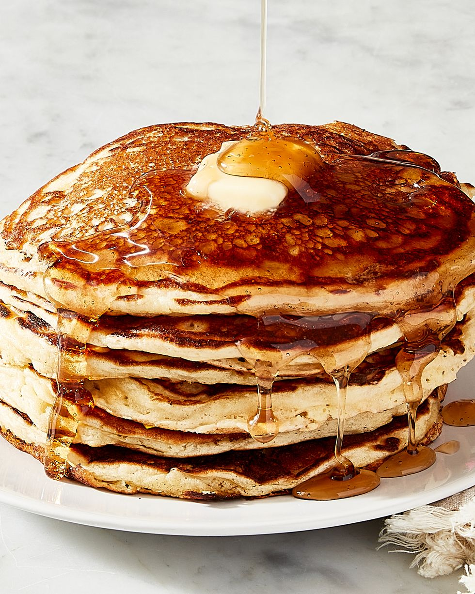

Buttermilk Pancakes

(Please click on the image above to follow the link to the original site and recipe!)
Easy and delicious buttermilk pancakes for the whole family!
Buttermilk pancakes are all in all a fairly straightforward recipe. Listed recipe
yields 3-4 servings, takes 10 minutes prep time and an estimated total cook time of 35
min.
Ingredients
- 2 cups all purpose flour
- 1 tbsp. granulated sugar
- 1 tsp. baking powder
- 1 tsp. baking soda
- 1 cup buttermilk
- 2 eggs, separated
- 4 tbsp. unsalted butter, melted, plus more for serving
- Vegetable oil
- Mayle syrup
Directions
-
In a medium bowl whisk together flour, sugar, baking powder, baking soda and salt.
In another medium bowl, whisk together buttermilk and egg yolks. As you whisk,
stream in the melted butter.
-
Preheat a griddle or other heavy bottomed skillet over medium heat until hot but
not scorching, 2 to 3 minutes. Add about a teaspoon of oil then use a cloth or
paper towel to rub it onto the cooking surface until you see no visible oil.
-
Using a measuring cup, ladle as many heaping ⅓ cups of batter onto the griddle as
you can fit, then use the bottom of the measuring cup to gently spread the batter
to even circles. Cook pancakes until you see bubbles form on the top and the
sides start to lift from the pan, 2 to 3 minutes. Flip the pancakes and cook until
the bottom is golden and the cake is fluffy, another 2 to 3 minutes. Transfer to
a rack. Continue with the rest of the batter, wiping out the pan and adding more
oil between batches.
-
Serve and enjoy.